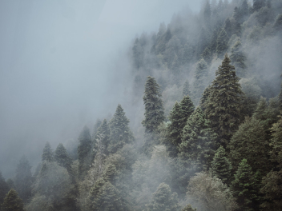
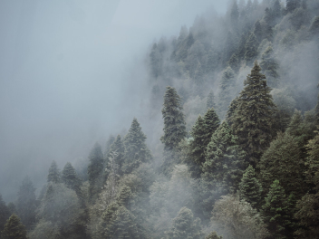

По опросам ВЦИОМ, 95% россиян мечтают куда-нибудь поехать, но только 36%
планируют провести отпуск в родной стране. Мол, чего мы тут, дома, не видели? На
самом деле, Россия — это целая вселенная с ласковым морем юга, густыми лесами
Саян и суровыми льдами плато Путорана. А ещё увидеть все эти красоты можно без
миллионов на счету, загранпаспорта и многочасовых перелетов. Как, например, Вера
Башмакова — смелая молодая мама, которая взяла в охапку троих детей, усадила их
в свою «Ладу» и проехала 20 тысяч километров по родной стране. Мы выбрали и
описали некоторые интересные места, достойные вашего отпуска.
Здесь, посреди лесов и песчаных дюн, вы сможете
увидеть два водных горизонта — спокойного
Куршского залива с одной стороны и подёрнутого
рябью волн Балтийского моря с другой. Уникальная
природная зона на краю российского анклава.
На этом Калининградская область не заканчивается.
Для путешественника и исследователя там же по
соседству — самая западная точка России,
Балтийская коса, — и немецкое наследие россыпи
небольших приморских городов. Атмосфера здешних
мест исключает суету, окуная в спокойствие
природы и запах стального, прохладного моря.
Почти весь полуостров находится за Полярным
кругом. Саамская тундра, от которой на юг —
тайга, а на север — Ледовитый океан,
прикидывающийся Баренцевым морем.
Возможно, вы смотрели Звягинцева и даже слышали
историю арктического фестиваля в Териберке.
Возможно, слово «Хибины» не осталось под снегом
школьных воспоминаний об уроках географии.
Возможно, вы не интересовались пронизывающей
земную кору сверхглубокой скважиной, а от апатитов
вас давно накрывает апатия. Но ваша мечта увидеть
северное сияние начинает сбываться с билетом в Мурманск.
Алтай — одно из красивейших мест в России.
В первую очередь из-за гор: если ехать вдоль хребта,
вы увидите склоны, усыпанные соснами, горные реки
и озёра. А если вы откроете в автомобиле окна,
сможете познакомиться с невидимым чудом здешних
мест — горным воздухом.
Климат на Алтае умеренный, поэтому ехать сюда
лучше всего летом. Так вы увидите всё разнообразие
местной флоры и фауны. По лесам Алтая бродят
лоси, над хребтами летают орлы, а на равнинах
пасутся косули. И знаменитые манулы — тоже
обитатели Алтайского края.
Всем известен Байкал как крупнейшее озеро
в мире. Многие также знают, что это самый большой
источник пресной воды и одно из красивейших мест в России.
Конечно, это всё так. Но Байкал ещё идеальное
место для соревнований по скийорингу. Это такой
вид спорта, когда лыжник привязывает себя
к мотоциклу, и тандем старается развить как можно
бóльшую скорость на льду. В марте 2019 года на
фестивале «Байкальская миля» был поставлен
мировой рекорд — 197.011 км/ч.
Сибирь заканчивается не на Урале, а в Карелии:
образующая тайгу сибирская лиственница не растёт
западнее Водлозера. Зато здесь она вымахивает на
30 метров — леса карельских национальных парков
из-за непроходимых болот никогда не знали топора.
Некоторым соснам уже больше чем полтысячелетия.
Прикоснитесь к живому существу, видевшему
солнце раньше, чем увидал его Иван Грозный.
В девственном лесу на сотню километров не
встретишь тропы. А на редких тропинках деревья
в паре метров от земли помечены медвежьими
когтями. Чтобы все знали, кто тут хозяин.


 
